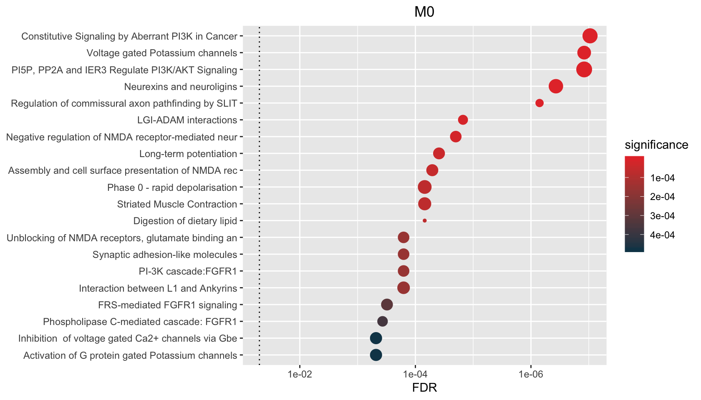
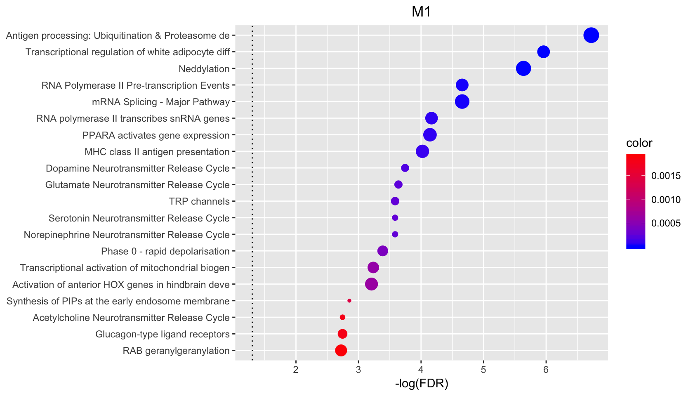
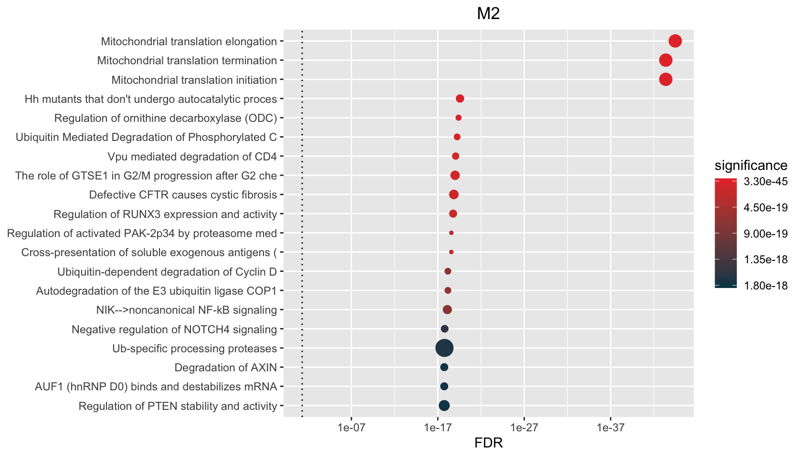

Other times we’re looking at multiple signatures that may have been defined in a single experiment. In this case, we can feed hypeR() a named list of signatures and a multihyp object will be returned. This object is essentially just multiple hyp objects. However it is recognized and handled differently by downstream methods.
hypdat <- readRDS(file.path(system.file("extdata", package="hypeR"), "hypdat.rds"))
wgcna <- hypdat$wgcna
rgsets <- hyperdb_fetch(type="rgsets", "REACTOME")
gsets <- rgsets$gsetssignatures <- wgcna[[1]]
str(signatures)List of 16
$ M0 : chr [1:1490] "C9orf156" "GRIN3A" "HES3" "HTR1B" ...
$ M1 : chr [1:1852] "OPRK1" "AVP" "NEURL2" "STOX2" ...
$ M2 : chr [1:1390] "ZBTB2" "ADPRHL2" "UQCR11" "UNK" ...
$ M3 : chr [1:559] "RALY" "MED11" "MANBAL" "PM20D2" ...
$ M4 : chr [1:1309] "C1QTNF7" "CYP4F12" "SOCS2" "PRSS2" ...
$ M5 : chr [1:408] "MCUR1" "SOS2" "UBR5" "H3F3B" ...
$ M6 : chr [1:447] "MT-ND2" "MT-ND1" "AQP8" "MT-ND3" ...
$ M9 : chr [1:420] "MPLKIP" "SLC22A7" "CFD" "GYPC" ...
$ M10: chr [1:255] "POLR2B" "KIF18B" "SIRT5" "CENPK" ...
$ M11: chr [1:252] "ATRN" "ZCCHC7" "ERLIN1" "SLC44A4" ...
$ M12: chr [1:441] "CDK20" "TLN1" "LIPT2" "MTA1" ...
$ M13: chr [1:418] "SPIC" "ZNF317" "CRYZ" "SEPHS1" ...
$ M16: chr [1:223] "TREX1" "S100A16" "RNF138" "BRF2" ...
$ M23: chr [1:105] "ISYNA1" "SPCS1" "DDOST" "SPCS2" ...
$ M30: chr [1:59] "ZSCAN21" "COMMD2" "ORAI3" "MRPL16" ...
$ M32: chr [1:54] "HLA-G" "CMPK2" "SP110" "UBA7" ...All workflows begin with performing enrichment with hypeR().
multihyp_obj <- hypeR(signatures, gsets, test="hypergeometric", bg=50000, fdr_cutoff=0.01, do_plots=FALSE)When saving a multihyp object to excel, each signature is exported to its own tab.
hyp_to_excel(multihyp_obj, file_path="hyper.xlsx")When saving a multihyp object to a table, each signature is exported as its own table in a single directory.
hyp_to_table(multihyp_obj, file_path="hyper.txt")When plotting a multihyp object, each signatures is plotted and returned separately. The same goes for hyp_dots(), hyp_emap(), and hyp_hmap().
p <- hyp_dots(multihyp_obj, show_plots=FALSE, return_plots=TRUE)names(p)[1:3][1] "M0" "M1" "M2"$M0
$M1
$M2